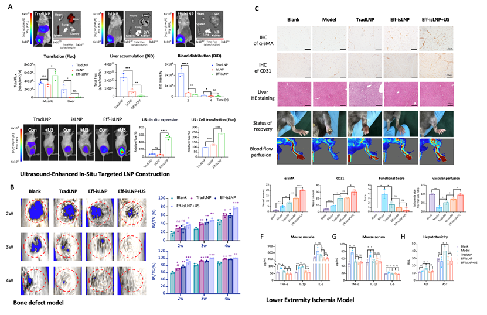

Research Background and Significance
针对现有mRNA脂质纳米颗粒（LNP）肝脏蓄积性强、局部递送效率低且存在潜在肝毒性的关键瓶颈，参与人构建了一种具有原位靶向与超声响应能力的新型LNP平台（Eff-isLNP）。该系统通过表面工程化修饰与内部结构重塑，实现了mRNA在病灶部位的高效滞留与表达，并将非靶器官分布降低90%以上。结合外场超声的“声打印”效应，可进一步将局部mRNA表达提升3–8.5倍，在不引发全身炎症与肝毒性的前提下，于下肢缺血与临界骨缺损模型中分别驱动功能性的血管新生与“血管‑成骨耦合”再生，显著加速组织修复进程。该平台为安全、高效的局部mRNA药物治疗提供了新范式。
Core Methods and Technologies

图3. （A）超声增强型原位靶向Eff-isLNP构建。此mRNA递送平台在（B）骨缺损模型中加速股骨愈合；（C）下肢缺血模型中加速恢复血流灌注的同时避免了肝脏损伤。
Recent Key Developments
Representative Papers1： Multi-functional lipid nanoformulations for enhancing the efficacy of mRNA tumor vaccines by reversing tumor immunosuppressive microenvironment Nano Today, 2025.8
Representative Papers2： Enhancing mRNA Translation Efficiency by Introducing Sequence- Optimized AU-Rich Elements in 3’UTR via HuR Anchorage Molecular Therapy - Nucleic Acids, 2025.6